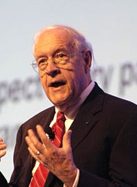

'You can learn more from failure than success. In failure you're forced to find out what part did not work. But in success you can believe everything you did was great, when in fact some parts may not have worked at all. Failure forces you to face reality.' -Fredrick
Fred Brooks was an American computer scientist born on April 19, 1931. Brooks attended Duke University and Harvard University. He received his bachelor degree at Duke in physics and got his doctorate in applied mathematics at Harvard. After finishing his schooling, Brooks went on to work at IBM. There he, alongside Dura Sweeny, invented the interrupt system for computers. It was used to synchronize events found in multiple programs. Brooks played the role of making the IBM OS/360 as the manager. He stopped working at IBM in 1965. A year before he left he founded the department of computer science at the University of North Carolina. After his leave from IBM he became the chair in North Carolina and was there until 1984. Brooks was really invested in researching. He researched things like virtual reality, three dimensional computer graphics, and human computer interaction. His research of virtual reality led him to create scientific visualization tools. One of these tools was a molecular graphics system which he created. It was able to solve the physical structure of a newly discovered protein. He also pursued writing and released two books with Kenneth Iverson. They wrote Automatic Data Processing and The Mythical Man-month: Essays on Software Engineering . Then with Gerrit Blaauw he wrote Computer Architecture: Concepts and Evolutions, and Computer and Architecture: A Computer Zoo. He often played a part in many institutes, academies, etc. Some were the Association for Computing Machinery, the Artificial Intelligence Task Force, the American Academy of Arts and Science, just to name a few. He also wound up with many awards and medals. A small selection of them are the ACM Allen Newell Award, the U.S. National Medal of Technology and the Franklin Institute Bower Award and Prize in Science.
Hosch, William L.. "Fred Brooks". Encyclopedia Britannica, 15 Apr. 2020, https://www.britannica.com/biography/Fred-Brooks. Accessed 18 March 2021.